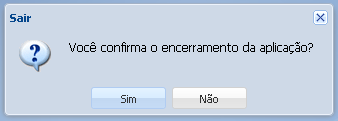

• Finalizando o sistema
Para sair do sistema, basta clicar no menu Funcionalidades e logo em seguida no botão Sair
1. Clique no botão Sair
2. Abrirá uma nova janela

Clique no botão Sim para finalizar o sistema, caso deseja continuar no sistema clique no botão Não.